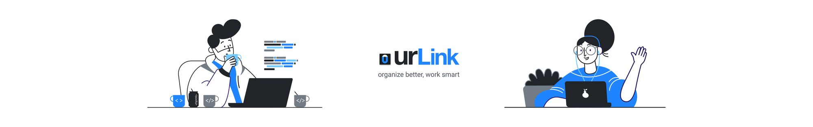

-
👏 Update Notifications[If only chrome is turned on, We will send you a link reminder as a reminder at the time you set]
Maybe, you were uncomfortable because you can only check it on your link page. But now, if you set an alarm on the 'link card', the notification arrives at the specified time. Make a habit of reading URLs without forgetting the link you saved with the notification! -
😎 Other updates
- We add a 'scroll up' button in the visit history list.
- A 'refresh' button has been added to the category page and visit history list.
- We did design improvements and bug fixes!
⚙️ didn't you get the link notification at the set time?* Please refer to https://www.notion.so/vvidstudio/c936d72ea9a2415ea8ca5395d8d8cf22 for more details.For smooth service use, please pin the'urLink' after clicking the 'Puzzle' icon on the top right of Chrome!
You kept useful information you found while surfing the web in bookmarks, notepads, bookmarks, and messengers, but when I tried to find it, You couldn't remember where I kept it.
UrLink can easily organize and store scattered and forgotten information you read.
It reduces research time by allowing users to easily and efficiently manage, edit, and share their browsing history and links for users who often store and categorize professional and informative information on the Internet.
It reduces research time by allowing users to easily and efficiently manage, edit, and share their browsing history and links for users who often store and categorize professional and informative information on the Internet.